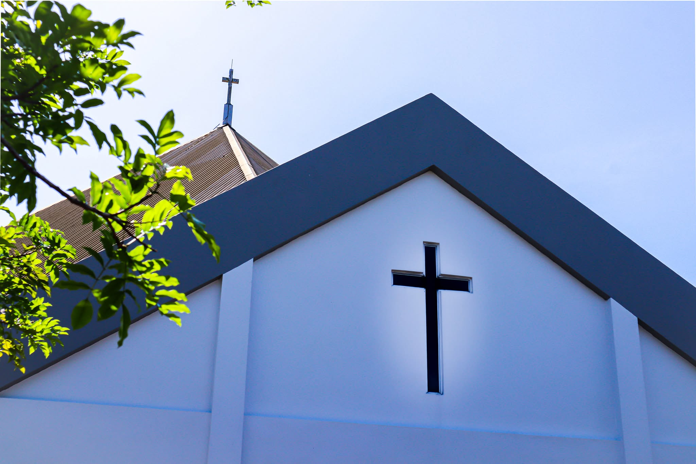

01 / Architecture
The Church Exterior
The pitched roof and prominent cross give the church its distinctive silhouette. The cross on the façade points to the faith at the centre of parish life.
See in the 3D illustration